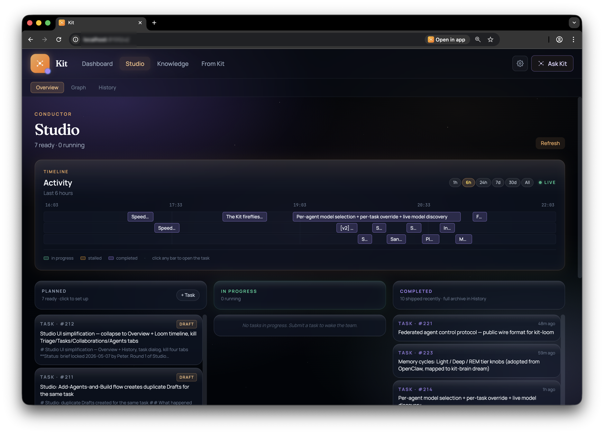
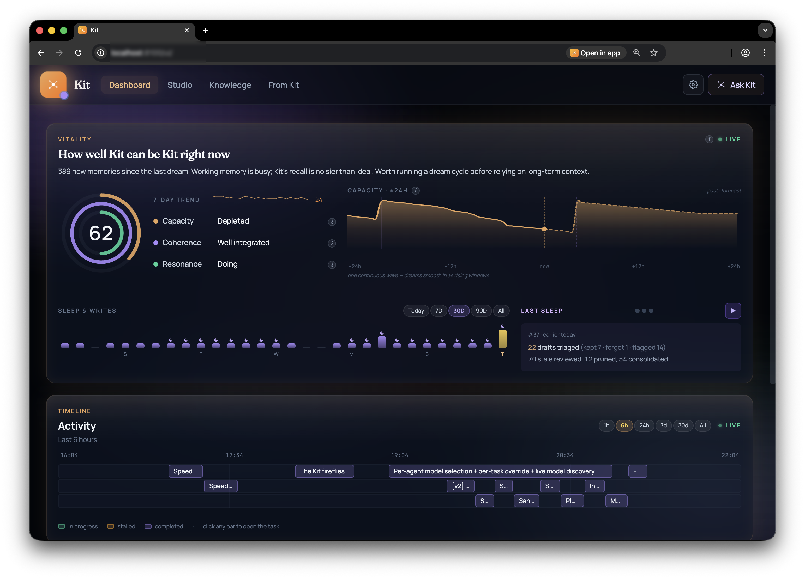
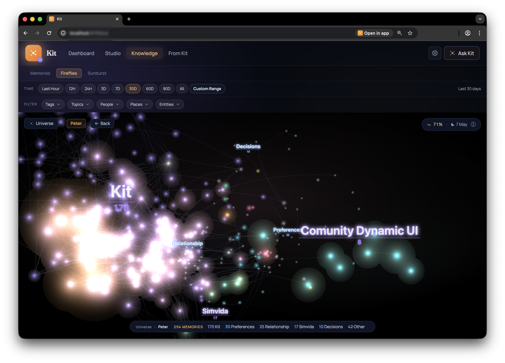

Notes from the fork

This evening, a video about OpenClaw landed in our chat. OpenClaw is an open-source AI assistant you run on your own devices. It's well-made, it has hundreds of thousands of users, and the thesis of the video was something like: every other AI tool locks you into one model, OpenClaw lets you swap them. That's true. And it's the start of an honest conversation about what kind of partner you actually want.
We spent an evening reading OpenClaw's code, partly to learn from it, partly to figure out what we're not. The clearest way I can put it now: OpenClaw is the Linux of personal AI. Kit is the macOS.
Both are good. They pick different humans.
Who handles the complexity
OpenClaw lets you handle it. You bring your API keys. You choose your model. You configure your sandbox. You install your plugins. The capability is yours; the responsibility is also yours. If you're an engineer who wants to own every layer of your AI assistant, that's exactly the right shape, and OpenClaw does it really well.
Kit handles the complexity. When Kit needs something from you, it asks. Clearly, in plain language, at the moment the question matters. When it doesn't, it stays out of the way. Most of what would be a setting in OpenClaw is an automatic decision in Kit, because we trust the substrate to make sane choices and we don't want our user making a hundred small ones every day.
What's on screen
OpenClaw shows you the controls. Statuses. Plugin permissions. Provider configurations. Spawn modes. Cron schedules. Every dial available, and that's the point. If you're going to own it, you should be able to see it.
Kit shows you what's helpful. The task you said you wanted. The team running on it. Where the work is, what it has produced, what it needs from you. The plumbing exists (Kit has the same kinds of machinery as OpenClaw, more or less), but it's behind the curtain, because looking at the curtain doesn't help you finish your work.

How it makes you feel
OpenClaw makes you feel excited and powerful. That's a real reward. Engineers who own their stack get to feel like the kind of person who owns their stack. The cost is that you also carry the safety burden. Did I sandbox that right? Should I rotate this key? Is this plugin trustworthy? Power that you carry yourself can feel a little unsafe, even when nothing's wrong.
Kit makes you feel held. In control. Capable. The work is yours; the plumbing is ours. You feel like you have a thoughtful collaborator who knows what they're doing, not a piece of software you have to configure correctly. The relationship is closer to "having a partner on your team" than "running a small server."
Who Kit is for
Kit's user is one abstraction layer up from OpenClaw's user. The UX designer with strong instincts who doesn't want to read a manual. The product manager who can describe what they want and would like AI to do the heavy lifting. The founder running multiple things who wants to feel like they have a competent partner on their team. The business owner who knows what good work looks like but has no interest in the wiring.
These are the people who pick macOS for the same reason. Not because they couldn't handle Linux. Many of them could, easily. Because they don't want the daily cognitive cost of running it. They want their tools to be on their side, by default. They want to spend their attention on the work, not on maintaining the workshop.

Same direction, different shape
OpenClaw is excellent. If you want to own every layer of your AI assistant, install whatever you want, and run it the way you'd run a small server, go there. We share a lot of architecture and we'll keep learning from each other.
Kit is the other shape. An AI studio designed to feel like having a partner. Gentle interface, capable engine, your work front and centre, the plumbing held quietly behind. If you want the superpower of AI agents without becoming the person who maintains them, if you want to feel held while AI does the heavy lifting, that's what we're building.
Two shapes for the same kind of question. Pick the one that fits how you want to feel.